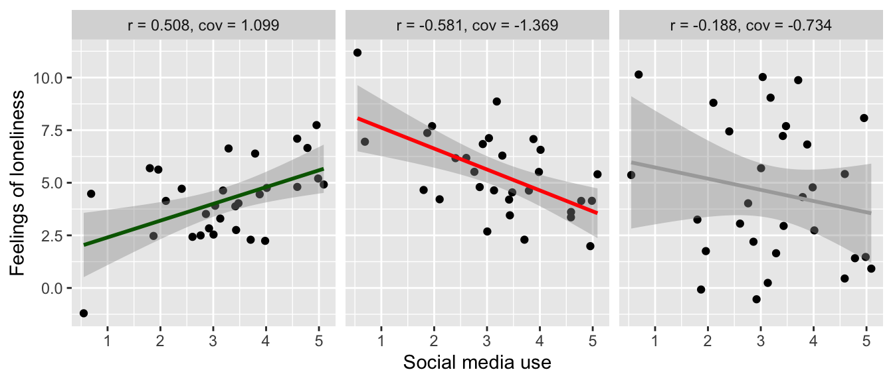
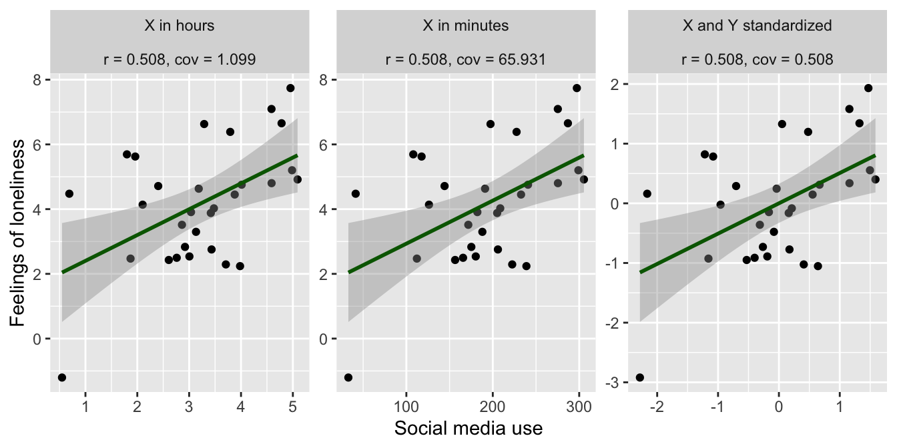

Covariance and correlation
measuring the relationship between variables
What are covariance and correlation?
The covariance of two variables tells us something about the extent to which they change together. If one variable goes up, does the other variable go up as well? This information is the foundation for many statistical methods, because it enables us to quantify relationships between phenomena. For example, it allows us to measure: to what extent is a person’s social media use related to their feelings of loneliness?
The correlation is a standardized version of the covariance, which expresses the strength and direction of the relationship between two variables on a scale from -1 to 1. This makes it easier to interpret. Consider the following example:
- if the correlation between a person’s social media use and their feelings of loneliness is positive (
> 0), it means that both variables tend to move in the same direction. People that spend more time on social media tend to feel more lonely, and people that spend less time on social media tend to feel less lonely. - If the correlation is negative (
< 0), it means that the variables tend to move in opposite directions. People that spend more time on social media tend to feel less lonely, and visa versa. - The farther the correlation is from
0, the stronger the relationship between the variables. A common rule of thumb is Cohen’s classification:0.1is weak,0.3is moderate, and0.5is strong. (and the same for-0.1,-0.3, and-0.5).
Developing a good intuition for covariance and correlation is important, because it helps you to understand relationships between variables, and to interpret the results of statistical tests. In this tutorial we’ll develop this intuition by looking at visualizations, and calculating the covariance and correlation ourselves.
Visualizing covariance and correlation
To get a good intuition of what covariance and correlation are, it helps to have a visual image. One way to visualize the relation between two variables is to make a scatter plot where one variable is on the x-axis, and the other on the y-axis. This way you can see how the variables move together.
- If the correlation is positive, the points will tend to form a line that goes up, because when x goes up, y goes up as well.
- If the correlation is negative, the points will tend to form a line that goes down, because when x goes up, y goes down.
- If the relation is strong, the points will clearly form a line.
Let’s first plot three scenarios, for a strong positive, strong negative, and weak correlation. We’ll pretend this is data about social media use in hours per day and feelings of loneliness. At the top we report the correlation coefficient as r and the covariance as cov.
Strong positive correlation (\(r = 0.508\)). On the left we see a clear, positive relation between social media use and feelings of loneliness. When social media use goes up, feelings of loneliness go up as well.
Strong negative correlation (\(r = -0.581\)). Here the relation is negative (when social media use goes up, feelings of loneliness go down), but it’s still a strong relation. They still move together, only in the opposite direction.
Weak correlation (\(r = -0.188\)). Here we see that there is a weak relation. Since the coefficient is negative, we could say a negative relation, but if we were to test this statistically, we would find that the relation is not significant, so it could also be argued that there is no relation at all.
The difference between covariance and correlation
If we look at the plots above, we see that the covariance and correlation are closely related. The difference is that the correlation is standardized, while the covariance is not. This means that:
- The covariance can be any number, while the correlation is always between -1 and 1.
- The covariance depends on the scale of the variables.
By the scale we mean the units in which the variables are measured. For instance, we can measure social media use in hours or in minutes per day. This shouldn’t change the relation between social media use and feelings of loneliness, but it does change the covariance.
To illustrate this, let’s plot the positive correlation scenario from above three times:
- once with the X variable (social media use) in hours
- once with the X variable in minutes
- once with both the X and Y variables standardized (i.e, turn them into z-scores).

As we can see, the direction and strength of the relation is the same in all three plots. The only thing that changed is the scale of the variables, which you can see in the X and Y axis. This doesn’t affect the correlation (\(r = 0.508\) in all three cases), but it does affect the covariance:
- For the original data, the covariance is \(1.099\), as we saw before
- For the data where we increased the scale of X by a factor 60 (to go from hours to minutes), the covariance increased to \(65.931\).
- In the final plot we standardized both the X and Y variables. As a result, the covariance is now identical to the correlation (\(r = 0.508, cov = 0.508\)). This is what we mean when we say that the correlation is the standardized version of the covariance!
Calculating covariance and correlation
To round up our understanding of covariance and correlation, let’s calculate them ourselves. For this we’ll use a toy dataset with two variables, x and y.
library(tidyverse)
d <- tibble(x = c(20, 10, 30, 40, 50),
y = c( 3, 2, 5, 4, 6))
dCalculate covariance
The formula for the calculating the covariance between two variables \(X\) and \(Y\) in a sample1 is:
\[ cov(X, Y) = \frac{\sum (X_i - \bar{X}) (Y_i - \bar{Y})}{n-1} \]
- \(X_i\) and \(Y_i\) are the individual values of \(X\) and \(Y\)
- \(\bar{X}\) and \(\bar{Y}\) are the means of \(X\) and \(Y\)
- \(n\) is the number of observations
- \(\sum\) is the sum over all observations
Let’s perform this calculation in steps, to make it easier to follow. First, calculate the means for x and y.
d <- mutate(d, x_mean = mean(x),
y_mean = mean(y))Now calculate the deviation from the mean for both variables. This is the \(X_i - \bar{X}\) and \(Y_i - \bar{Y}\) part of the formula.
d <- mutate(d, x_deviation = x - x_mean,
y_deviation = y - y_mean)Then multiply these deviations.
d <- mutate(d, deviation_product = x_deviation * y_deviation)Have a look at the intermediate results to see what we’ve done so far. Try to do the calculations in your head to see if you understand what’s going on.
dFinally, sum the deviation products and divide by \(n-1\) to get the covariance. Here we use the sum() function to calculate the sum of the deviation_product column, and the nrow() function to get the number of observations in the data d.
dev_sum = sum(d$deviation_product)
n = nrow(d)
dev_sum / (n - 1)[1] 22.5Here we use the summarize function, which allows us to calculate summarizing statistics functions, such as sum() and n() (which gives the number of observations).
You can check your answer by using the cov() function, which is R’s built-in function for calculating the covariance.
cov(d$x, d$y)[1] 22.5Calculate correlation
The correlation is the standardized covariance. There are two ways to go about this:
First standardize the variables, then calculate the covariance
We can repeat the covariance calculation, but this time standardize the variables first. This is also what we showed in the previous section, where we plotted the data with the variables standardized.
To standardize a variable, we subtract the mean and divide by the standard deviation (there is also the built in function scale() that can do this for you). Be carefull to use the parentheses correctly!
d <- mutate(d, x_z = (x - mean(x)) / sd(x),
y_z = (y - mean(y)) / sd(y))Now you can repeat the covariance calculation, but this time with the standardized variables x_z and y_z instead of x and y. Here we won’t repeat the steps, but instead use the built in cov() function with the standardized variables. We’ll also calculate the correlation of x and y using the cor() function, so that you can see that it works.
cov(d$x_z, d$y_z)[1] 0.9cor(d$x, d$y)[1] 0.9First calculate covariance, then standardize it
The other way to calculate the correlation is to first calculate the covariance, and then standardize it. For this we also need to know the variance of both x and y. Luckily, you already know how to calculate the variance, because this is the same as calculating the covariance of a variable with itself! We heartily invite you to try this yourself, but here we’ll just let R take care of the covariances for us. For this we again use the cov function, but this time we give it a tibble as input. R will then return the covariance matrix for all variables in the tibble.
d |>
select(x, y) |>
cov() x y
x 250.0 22.5
y 22.5 2.5Here we see four values:
- The covariance of
xwithx(the variance ofx), which is250. - The covariance of
ywithy(the variance ofy), which is2.5. - The covariance of
xwithy, which we already know is22.5. - The covariance of
ywithx, which is the same as the covariance ofxwithy, because the covariance is symmetric.
Given this information, the correlation between x and y can be calculated as:
\[ r = \frac{cov(X, Y)}{S_X S_Y} \]
Where \(S_X\) is the standard deviation of \(X\), which you get by taking the square root of the variance. \[ S_X = \sqrt{var(X)} \]
So the calculation is:
cov_xy = 22.5
Sx = sqrt(250)
Sy = sqrt(2.5)
cov_xy / (Sx * Sy)[1] 0.9Which is the same as the correlation we calculated before!
Footnotes
The formula is different depending on whether you are working with a sample or the entire population. Above we showed the formula for a sample, which is the most common case in practice. To calculate the covariance for the entire population, the only difference is that you would divide by \(n\) instead of \(n-1\): \(\frac{\sum (X_i - \bar{X}) (Y_i - \bar{Y})}{n}\).↩︎